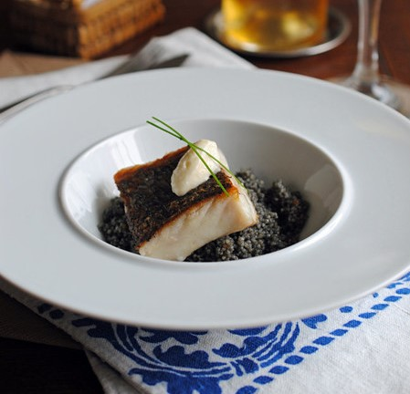

Cuscús negro con merluza
Ingredientes:
- 150g de cuscús
- 1 vaso de caldo de pescado
- 1 zanahoria
- 1 diente de ajo
- 1 cebolla mediana
- 1 bolsita de tinta de calamar
- 1 corte de merluza por persona (o cualquier otro pescado blanco)
- Aceite de oliva, sal y mantequilla
Pasos:
- En una cazuela se cuecen a fuego lento las verduras cortadas en brunoise.
- Posteriormente se añade el cuscús para que se tueste un poco y luego se vierte el caldo de
pescado con la tinta.
- Se deja cocer hasta que el cuscús quede hecho, alrededor de unos 5-10 minutos.
- Se puede añadir una cucharada de mantequilla para hacerlo más sabroso y que los grandes queden
separados.
- Emplatamos haciendo una cama de cuscús negro y colocamos encima el pescado hecho a la plancha.
Volver